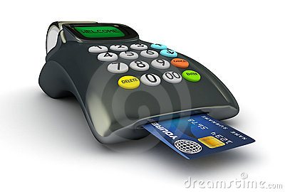

Banking cards offer consumers more security, convenience, and control than any other payment method. The wide variety of cards available – including credit, debit and prepaid – offers enormous flexibility, as well. These cards provide 2 factor authentication for secure payments e.g secure PIN and OTP. RuPay, Visa, MasterCard are some of the example of card payment systems. Payment cards give people the power to purchase items in stores, on the Internet, through mail-order catalogues and over the telephone. They save both customers and merchants’ time and money, and thus enable them for ease of transaction.
How to get it:
Provide KYC (Know Your Customer) information to open a new account
Apply for Card with option of Debit / Credit Card
Get a PIN
Service Activation:
Visit an ATM to activate PIN
May take about 3-7 days
What is required for Transaction:

PoS terminal or online payment gateway
Present Card physically or card details for online transaction
Provide PIN
Provide OTP (One Time Password) received on registered mobile to complete online transaction for merchant website.
Self-service and/or Assisted mode
Transaction Cost:
NIL to customer for merchant transactions.
Annual fee and limits on ATM transaction by banks discretion.
0.50% to 2.25% paid by merchant
Cash-out charged to customer in case of credit cards @ 1% to 3.5% of transaction value.
Services Offered:
These cards can be used at PoS (Point of Sale) machines, ATMs, microATMs, Shops, wallets, online transactions, and for e-commerce websites.
International cards can be used across globe for multiple currencies